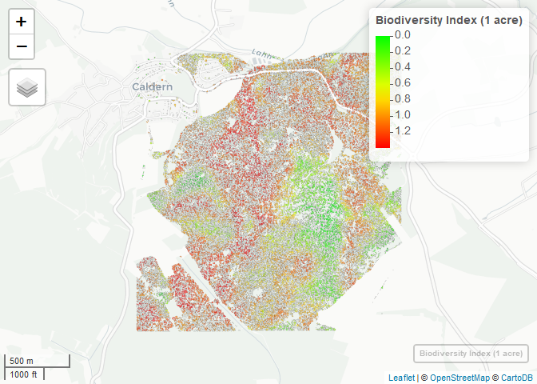

Biodiversity Index
Overview of the Biodiversity Index at a 1 acres environment
This is a preview of the map for tree species biodiversity for the University Forest Caldern. Unfortunatley, due to file size limitations on github, the fully interactive version of the map is hosted by servers of the Environmental Informatics Department of the University of Marburg. Be aware that the file size is above 100 MB.
The biodiversity index is based on a one-acre environment for every tree and then calculating the Shannon-Weaver Entropy index for the different species present in the neighbourhood. At this scale, it gives a good overview of biodiversity hotspots in the forest area.
